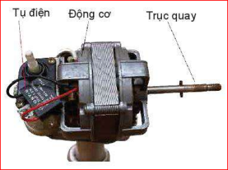
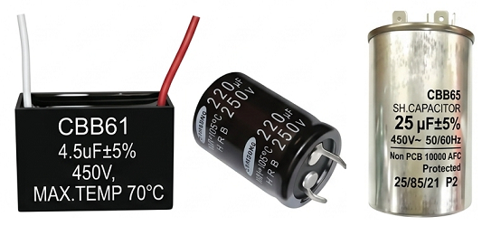
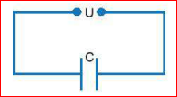
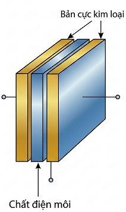
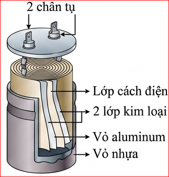
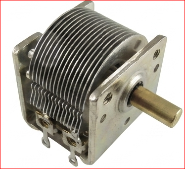
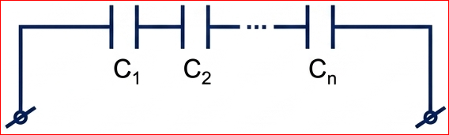
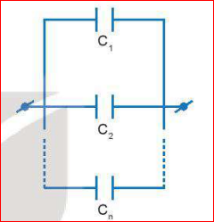
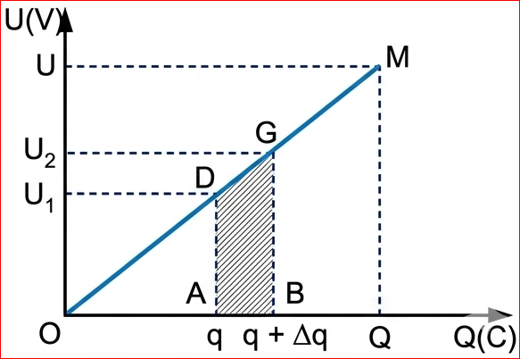
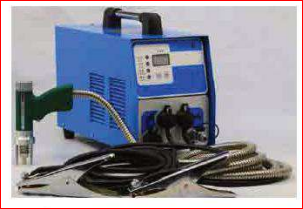

Chương III - Điện Trường

Tụ điện trong một chiếc quạt điện dân dụng

Hình 21.1. Một số tụ điện
Hình 21.2. Kí hiệu tụ điện trong sơ đồ mạch điện
Trong mạch điện, tụ điện có nhiệm vụ tích điện và phóng điện. Ta có thể hình dung quá trình này như sau:

Hình 21.3. Tích điện cho tụ điện

Hình 21.4. Cấu tạo tụ điện phẳng

Hình 21.5. Cấu tạo tụ điện hình trụ
Độ lớn điện tích \( Q \) mà tụ điện tích được tỉ lệ thuận với hiệu điện thế \( U \) đặt vào hai bản của nó:
\( Q = CU \) (21.1)
Đại lượng \( C \) được gọi là điện dung của tụ điện, đặc trưng cho khả năng tích điện của tụ ở một hiệu điện thế xác định.
\( C = \frac{Q}{U} \) (21.2)
Đơn vị của điện dung là fara (kí hiệu là F). Các đơn vị nhỏ hơn thường dùng:
Ngoài các tụ điện cố định, còn có tụ điện xoay có thể thay đổi điện dung.

Hình 21.6. Tụ xoay
? Câu hỏi (Trang 85):
a) Ghép nối tiếp:

Hình 21.7. Bộ tụ ghép nối tiếp
\( \frac{1}{C_{nt}} = \frac{1}{C_1} + \frac{1}{C_2} + ... \); \( Q_{nt} = Q_1 = Q_2 = ... \); \( U_{nt} = U_1 + U_2 + ... \)
b) Ghép song song:

Hình 21.8. Bộ tụ ghép song song
\( C_{ss} = C_1 + C_2 + ... \); \( Q_{ss} = Q_1 + Q_2 + ... \); \( U_{ss} = U_1 = U_2 = ... \)
Bài tập ví dụ (Trang 86):
Cho \( C_1 = 2 \mu F, C_2 = 3 \mu F, C_3 = 4 \mu F \). Tính \( C \) khi ghép nối tiếp và song song?
Năng lượng của tụ điện khi được tích điện với điện tích Q:
\( W = \frac{QU}{2} = \frac{Q^2}{2C} = \frac{CU^2}{2} \) (21.9)

Hình 21.9. Sự biến thiên của hiệu điện thế theo điện tích
? Câu hỏi (Trang 88):
Tính năng lượng tối đa của tụ D (\( 2 mF - 450 V \)) và tụ E (\( 2,5 \mu F - 350 V \))?
Tụ điện dùng để tích trữ và cung cấp năng lượng, lọc dòng điện, mạch khuếch đại, máy hàn bu-lông...
Dùng bộ tụ điện công suất lớn để tạo nhiệt làm nóng chảy bề mặt vật liệu và bu-lông.

Hình 21.10. Một máy hàn bu-lông
✋ BÁO CÁO: Một số ứng dụng của tụ điện
| STT | Điện dung - điện áp | Hình dạng | Thiết bị sử dụng | Mục đích |
|---|---|---|---|---|
| 1 | ... | ... | ... | ... |
| 2 | ... | ... | ... | ... |
Câu 1: Đơn vị của điện dung là gì?
Câu 2: Công thức tính điện dung của tụ điện là:
Câu 3: Khi ghép nối tiếp 2 tụ điện giống nhau \( C_1 = C_2 = C \), điện dung bộ là:
Câu 4: Năng lượng của tụ điện được tích trữ dưới dạng nào?
Câu 5: Nếu hiệu điện thế đặt vào tụ tăng 2 lần thì năng lượng tụ tăng mấy lần?
Bài 1: Một tụ điện \( 10 \mu F \) được tích điện đến hiệu điện thế 50V. Tính năng lượng của tụ.
Bài 2: Hai tụ \( C_1 = 2 \mu F, C_2 = 4 \mu F \) ghép song song. Tính \( C \) của bộ?
Bài 3: Một tụ điện phẳng có hằng số điện môi là 2, diện tích bản tụ 10cm², khoảng cách 1mm. Tính điện dung?